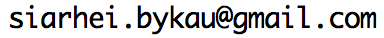

CS 44800: Introduction To Relational Database Systems
Information
Class: MWF 2:30 pm - 3:20 pm, LWSN B155
Instructor: Siarhei Bykau
Email: 
Office hours: M 3.30pm - 4.30pm, LWSN 3154C
PSO:
- T 9.30 am - 11.20 am, LWSN B148 - Ganapathy Mani
- R 9.30 am - 11.20 am, LWSN B146 - Ganapathy Mani/Sahithya Jagadish
- R 11.30 am - 1.20 pm, HAAS G040 - Ganapathy Mani
Q&A on Piazza: https://piazza.com/purdue/spring2015/cs44800/home
TAs:
Description
An in-depth examination of relational database systems including theory and concepts as well as practical issues in relational databases. Modern database technologies such as object-relational and Web-based access to relational databases. Conceptual design and entity relationship modeling, relational algebra and calculus, data definition and manipulation languages using SQL, schema and view management, query processing and optimization, transaction management, concurency and recovery, security, and some advanced topics.
- database design
- relational model
- relational algebra
- SQL
- storage and indexing
- query evaluation
- transaction management
- concurency and recovery
- integrity management
- database security
- data warehousing
- data mining
- data integration
Textbook
Database Management Systems, by Raghu Ramakrishnan and Johannes Gehrke Third Edition, McGraw Hill, ISBN: 0-07-246563-8
Grading
- Written Assignments 20%
- Programming Projects 40%
- Mid-term Exam 20%
- Final Exam 20%
- Class Participation 5% (Extra Credit)
Cource policy
- NO CHEATING
- NO LATE SUBMISSIONS
- NO EXTENSIONS
- Exception only for Documented Medical Reasons or Family emergency
The full course policy is available at http://spaf.cerias.purdue.edu/cpolicy.html